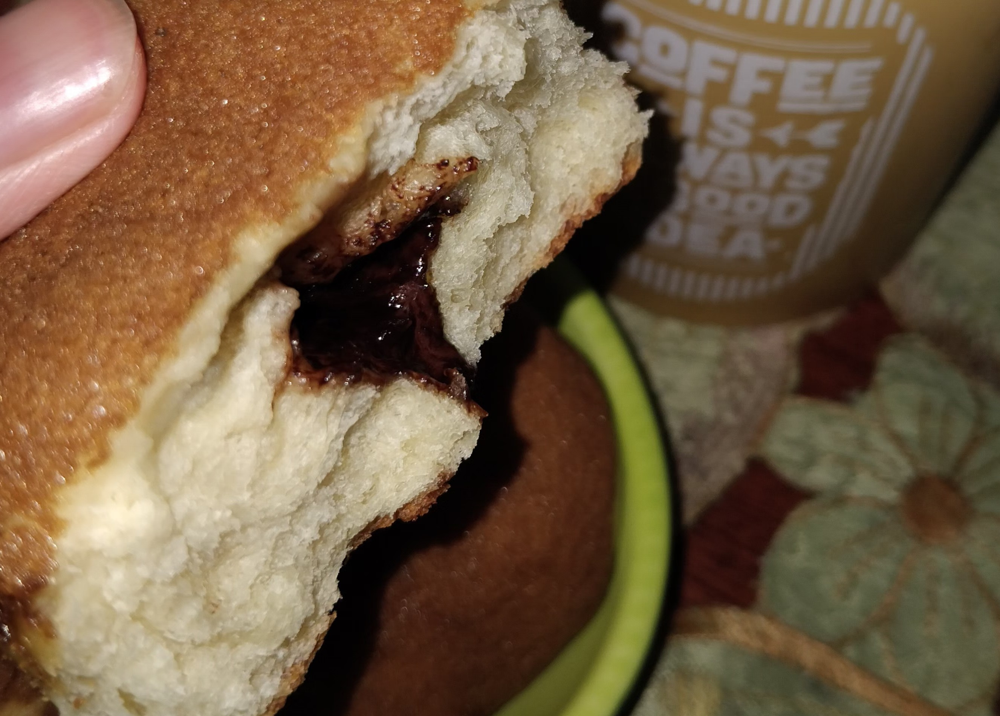

.png)
How Does Bread Dough Rise?

Bread is one food that is commonly considered a staple food in many parts of the world. Although it’s not traditionally considered one in my country, I do love bread! Bread has that fluffy soft texture which is suitable to combine with various different things—fillings, topping, glaze, even drinks and ice cream. But the taste isn’t the only interesting thing about bread; the making of it is also intriguing to observe.
All of us are likely familiar to the fact that bread is made from a mixture of flour, water, yeast, and other ingredients to add flavour. Then, it continues to a very significant process of making bread; leavening process before the dough is finally baked. Throughout the leavening and baking process, we’ll notice a notable change in the dough/bread. It eventually rises by itself. For some curious people, this may lead them to wonder, “How does that happen?”
Right now, I’m eager to elaborate this wonder based on my own understanding. In the making of bread, there is a process we call as fermentation that occurs. But then, “What is fermentation and how does it occur?” In biology, fermentation is in fact a part of metabolism. Specifically, it’s a type of catabolism which is the process of breaking down complex molecules which also releases energy. It was actually to my surprise that fermentation is considered a metabolism process as I didn’t have any idea of what metabolism is and I thought of fermentation as just a chemical process involving alcohol. Turned out, fermentation indeed falls under one type of catabolism; anaerobic respiration. Unlike aerobic respiration, fermentation is a respiration process or the release of energy that doesn’t involve oxygen.
In this case, yeast plays a key role in the whole fermentation process. Bread primarily consists of sugars like glucose, which is a complex molecule meant to be broken down during fermentation. To break down this glucose molecules by fermentation or anaerobic respiration, we need a certain substance namely leavening agent. This leavening agent used in making bread, is yeast—fungal microorganism like those in the genus of Saccharomyces.
With the help of yeast, the fermentation occurs leading to breaking of glucose molecules which produce ethanol (a type of alcohol compounds) and carbon dioxide gas. The gas produced in this process forms bubble within the bread/dough—thus, the bread expands and rises eventually. Next, in the baking process heat causes the ethanol to evaporate as well as allowing the carbon dioxide to expand more. By then, after several minutes of baking, the tasty fluffy bread will be ready to be served.
Apparently, even the ‘simple’ making of a piece of bread involves quite complicated process that we can’t ‘simply’ see. It also made me realize that those rather invisible living beings have contributed so much to our life. The bread I enjoy day-to-day wouldn’t be there without them.